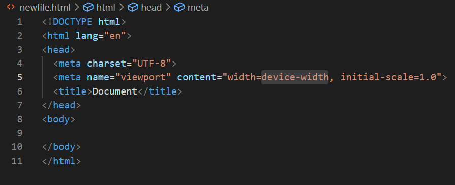

About HTML
HTML is the markup language most used to create web pages. They are typically stored on servers and sent to clients (i.e. browsers) who request them via the HTTP protocol, though you can also view an html document by 'requesting' a local file in your browser in it's address field.
The easiest way to see the most basic, required parts of a complete HTML document are to generate one from a template in VSCode. To do this, create a new file with a .html extension in a VSCode project. Open the new, blank file and press the ! key and <Enter> and it will create a boilerplate HTML page for you:

There is a lot to say about HTML and how to use it. I'll just mention a (very) few here and leave the rest up to you to research as you need.
- W3 Schools is a good reference for HTML tags.
- All HTML tags in a document are nested in another tab, sometimes several levels deep. The only exceptions to this are the !Document tag and the html tab (which is the root of the document).
- Most HTML tags require a closing tag (i.e. <a href="google.com">Google</a>.
- The tags you will always use are the ones generated by the template mentioned above: !Doctype, html, head, and body
- The tags that you will use most to gather data include: input and button.
- The tags that you will use most to format text and other data on a page include: p, div, and span
- Images are added to a document via the img tag. Video and other media are a bit advanced. I recommend you look those up after you've familiarized yourself with some of the other elements I've listed here.
- Tags can have several optional parameters (i.e. input tags frequently make use of the id and value parameters, button tags are useless without an onclick parameter).